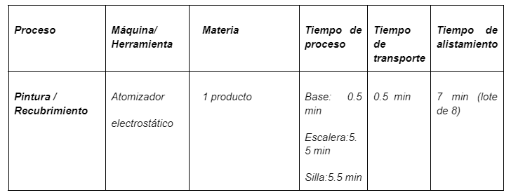

De acuerdo con lo discutido por los miembros del equipo se realizó el diseño una hoja de ruta tipo diagrama de flujo que resume los pasos a seguir para el diseño de la celda robotizada para el proyecto.
Para el diseño de la celda se plantean una serie de objetivos y metas que se esperan en automatizar el proceso de pintado en nuestra línea de producción, siendo estas:
En primer lugar, se empieza el análisis del proceso actual en el cual se clasifican los procesos y productos involucrados en la estación estudiada, siendo el proceso principal el pintado y los productos involucrados son una silla, una escalera y un estante para libros.
Mencionando las tareas realizadas en dicha estación de pintura, estas estarían descritas como:
En donde, con el software de Tecnomatix Plant Simulation, se simulan los tiempos de operación para este proceso, lo cual se resume en la siguiente figura:
Resumen de tiempos en el proceso actual de pintado.
Después de lo anterior, ya que se tiene una necesidad clara de robotización en ese proceso se debe identificar el espacio de trabajo de la celda, por lo cual el espacio que se tiene disponible que como se mencionó es de 2*2.5 m pero se estimaría que para una celda robotizada si se usará un robot de tamaño mediano que tuviese un alcance máximo de 2 m aproximadamente, esa medida agregando las bandas transportadoras de entrada y salida de los productos, es posible que la celda robotizada tenga una longitud total de alrededor de 3 metros dependiendo el alcance en esa dirección que tenga el robot. En cuanto al ancho, es posible que la celda tenga un ancho no tan diferente al que se posee actualmente ya que solo sería necesaria la medida agregada del robot además de las barreras físicas. Y en cuanto a la altura, depende del tamaño del robot y los elementos de seguridad necesarios lo que aumentaría la altura total. Además, se necesitarán sensores de proximidad, sistemas de parada de emergencia y señalización clara para garantizar la seguridad del personal y el correcto funcionamiento del robot.
Ahora bien, hablando en términos de la secuencia que se piensa tener para el flujo de material que habrá en dicha celda robotizada se prevé que los productos entren a la celda gracias a un deslizador de piezas colgantes, el robot haga el proceso de pintado de acuerdo con el tipo de producto que entre y de la misma forma cuando el robot haya terminado se salga de la celda por los mismos deslizadores colgantes para que luego pasen a otra estación.
Ahora bien, se debe de seleccionar la herramienta a utilizar y el gripper diseñado para nuestra aplicación, por lo cual se consultaron diferentes catálogos, pero se encontró que en la marca ABB existen atomizadores que cumplen la función de un gripeer y la herramienta de trabajo que en este caso sería la pistola de pintura electrostática. Por estas mismas características se seleccionó en primera instancia el siguiente gripper:
· ROBOBEL625-MC: Este atomizador pesa 6.7 kg y es compacto y ligero destinado para el uso de robots de pintura y cuenta con la opción de limpieza exterior de campana.
Cabe resaltar que para la selección del robot se tuvo en cuenta el peso de cualquier equipo adicional (como mangueras o cables) y el peso de la propia pintura para asegurarse de que el peso total de todos estos componentes no supere la capacidad de carga máxima del robot en ninguna configuración. Lo cual se puede resumir en:
De acuerdo con la información anterior se consultaron robots diseñados precisamente para esta tarea de pintado y en términos de calidad y también por su diseño elaborado para específicamente la tarea de pintado de piezas de pequeño a mediano tamaño, además de características como el tamaño y el alcance del robot teniendo en cuenta las dimensiones del producto más grande que es la silla, la cual sus dimensiones no superan los 1,2 metros, se seleccionó la siguiente referencia de robot:
Espacio de trabajo del robot IRB 5510
Se contemplaron 2 opciones para la celda las cuales se muestran a continuación:
Opción 1 de Layout para celda de pintura
En este primer Layout se trató de utilizar dos robots para hacer el pintado de todas las superficies de los diferentes productos de la planta. Un riel lleva de forma colgante los elementos que son pintados por unos manipuladores por cada una de sus caras que deben ser cubiertas en su totalidad por los dos robots, esta cuenta con una cabina de pintura aislada e ignifuga. La celda cuenta con una configuración en la que externamente se encuentran los tableros y el controlador de tal forma que no es necesario ingresar para hacer monitoreo u operación de este.
Opción 2 de Layout para celda de pintura
En el segundo Layout se propone el uso de un solo robot teniendo en cuenta que los robots son muy costosos y de su buen diseño depende la viabilidad del proyecto. Un riel lleva de forma colgante los elementos que son pintados alrededor del manipulador para que pueda pintar cada uno de los productos de en su totalidad, esta celda robótica al igual que la anterior cuenta con una cabina de pintura aislada e ignifuga. La celda cuenta con una configuración en la que externamente se encuentran los tableros y el controlador de tal forma que no es necesario ingresar para hacer monitoreo u operación de este.
Pero haciendo una matriz de selección evaluando las ventajas y desventajas de cada propuesta realizada para la celda robotizada obtenemos esta tabla:
| Aspecto | Diseño 1 | Diseño 2 |
|---|---|---|
| Precio | 50500 USD | 27950 USD |
| Calidad de acabado | Excelente | Excelente |
| Eficiencia | Excelente | Excelente |
| Mantenimiento | Bueno | Excelente |
| Flexibilidad | Excelente | Excelente |
De acuerdo con la anterior matriz de selección se decide implementar el diseño mencionado en el layout 2.
Desde este punto se vuelve evidente que la concepción de celda robotizada cambia a algo más específico para nuestro proceso, por lo cual se referiría a “cabina robotizada” en vez de celda robotizada. Entonces teniendo el anterior layout como base se toma en cuenta que la cabina de pintura de la misma forma tendrá un solo robot de la misma referencia, además del conveyor overhead y de igual manera contará con su caja de control y tableros eléctricos junto a la cabina.
Para el desarrollo del pintado de los diferentes en primer lugar se hizo un modelado CAD de acuerdo a como se esperaría que fueran los soportes para cada uno de los productos, los cuales estarían en el conveyor overhead y estos se se ven representados en la siguiente figura:
Posteriormente se diseñó y realizó la programación de las rutinas de movimiento para las diferentes caras de cada uno de los productos, ilustrado en la siguiente figura:
Puntos para las diferentes rutinas de pintado de los diferentes productos.
Y además en la lógica de estación se hizo un diseño en cuanto a cómo iba a ser la simulación y cómo se llevaría a cabo cada proceso y etapa del proceso de pintado del robot, como se muestra en la siguiente figura:
A continuación se ilustra a manera de vídeo el proceso que se realizó en Robotstudio para que se entienda mejor la metodología implementada y a su vez se adjunta el archivo de visor de simulación correspondiente:
De manera consecuente se simularon los tiempos de operación de la celda robotizada en Tecnomatix Plant Simulation, lo cuales están resumidos en la siguiente tabla y se compararon con los que se tenían en el proceso actual:
Resumen de tiempos en el proceso automatizado de la celda robotizada.
Por la tabla anterior, se ve que para el proceso de pintado los tiempos para la base, escalera y silla cambiaron en un 90.91%, 63.33%.y 63.33% respectivamente, lo cual supone una ventaja en el cálculo del OEE y en si para toda la producción de la planta.
Para el tema de seguridad se deben identificar los peligros y las fuentes de riesgo en primer lugar. Existen peligros meramente mecánicos como aplastamiento, atrapamiento o golpe, por lo cual existen riesgos como:
Cabe resaltar que en términos de configuración se hace referencia a el posible riesgo que podría tener el operario si desea programar el robot de manera manual con el Flex Pendant o su vez también se puede interpretar de forma correcta como el caso en que el robot por cierta configuración que tenga en su rutina pudiese tomar una posición no convencional que pudiese atrapar o golpear a algún operario.
Para el análisis de riesgos se desarrolló una tabla en donde se mencionan los riesgos, el nivel de estos, la frecuencia con la que podrían ocurrir, el método de reducción de riesgo contemplado, el equipo necesario para mitigar ese riesgo y su referencia y precio, por lo que a continuación se ilustra dicha tabla:
Y finalmente remontándonos a la cabina de pintura se hizo una búsqueda en la web en donde se encontró un ejemplo a modo de ilustración de como seria a groso modo la cabina de pintura, lo cual se muestra en la siguiente figura:
Ejemplo de cabina de pintura
Con lo que se ve en la imagen anterior y además como el fabricante también lo indica, la cabina trae su propio tablero de control ya equipado y elementos de seguridad además como se ve en la siguiente imagen el fabricante indica que la cabina, aunque para este caso es de pintado de carros, cumple con las siguientes normas:
Normas certificadas para el ejemplo de la cabina
Dado lo anterior se hizo una búsqueda de alguna norma que estuviera relacionada al diseño de cabinas de pintura y en los archivos accesibles en la web se encontró la norma NFPA 33 del 2007 correspondiente a la National Fire Protection Association (NFPA) y que está relacionada con cabinas de pintura y sistemas de acabado. Por lo cual revisando esta norma, la cabina que se fuera a adquirir y que estuviera acoplada a nuestro proceso debería, siguiendo los aspectos mencionados en la norma anterior, cumplir con los siguientes criterios:
Si se requiere más información de la hoja ruta asi como más especificaciones consultar el siguiente documento: